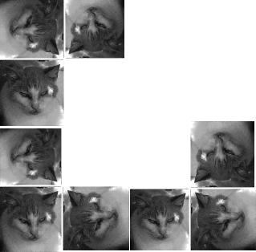

Purpose To create a sequence of wall hangings representing stages of a fractal pattern. The hangings will increase in size as the number of stages increase.
Materials 1,084 one inch square pictures (the same or different, perhaps pictures of students), scissors, glue sticks, clear tape, 361 pieces of white 2 by 2 inch paper, 120 pieces of white 4 by 4 inch paper, 40 pieces of white 8 by 8 inch paper.
Optional (if you are generating your own pictures) a digital picture, a computer, software for cropping and resizing pictures, software for cutting and pasting, a printer.
| Conclusion This method of growing fractals by accretion gives a physical sense of how the same process operates on different scales. |
| By taking photos as the atoms of the fractal, we have a clear example of how different features are visible at different scales. |
| If photos of students are used, mixing the pictures before beginning the assembly process can generate interesting discussions. |
The basic idea of this construction was presented by Vicki Fegers and Mary Beth Johnson in their chapter "Fractals - energizing the mathematics classroom" of Fractals, Graphics, and Mathematics Education.
Here are some pictures of the construction carried out in a recent workshop.